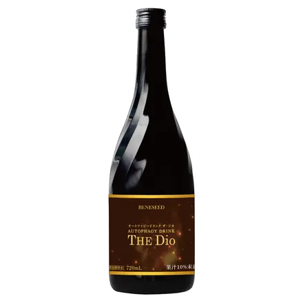

オートファジードリンク ザ・ジオ
- 形
- 飲みもの（清涼飲料水）
- 内容量
- 720ml
- 目安
- 1日24ml
- 価格
- 25,920円（税込）
原材料名
イソマルトオリゴ糖シロップ（国内製造）、エリスリトール、ブラックカラント果汁、ブドウ果汁、ザクロ抽出発酵物粉末、ヤマイモ抽出物、レモンエキス、ピロロキノリンキノン二ナトリウム塩、黒胡椒抽出物 / トレハロース、環状オリゴ糖、増粘多糖類、酸味料、香料、甘味料（ステビア）、酸化防止剤（酵素処理ルチン）、ビタミンB1、ビタミンB６、ビタミンC、（一部に大豆・やまいもを含む）
注意事項
- ●キャップの切り口でケガをしないようにご注意ください。
- ●加温・冷凍はしないでください。
- ●原料由来の成分が浮遊、沈殿したり、時間の経過により色が変わることがありますが、品質には問題ありません。
- ●原材料名をご参照の上、食物アレルギーのある方は、お召し上がりにならないでください。
- ●体質に合わないと思われるときは、お召し上がりにならないでください。
- ●乳幼児・小児の手の届かないところに保存してください。
- ●妊娠および授乳中の方、薬を服用中あるいは通院中の方、お子様のお召し上がりについては、事前に医師にご相談ください。
- ●空きビンも大切な資源です。リサイクルにご協力ください。
- ●開栓後は付属のキャップに付け替え、冷蔵庫で保存し、お早めにお召し上がりください。
- ●ビンをよく振ってからお飲みください。